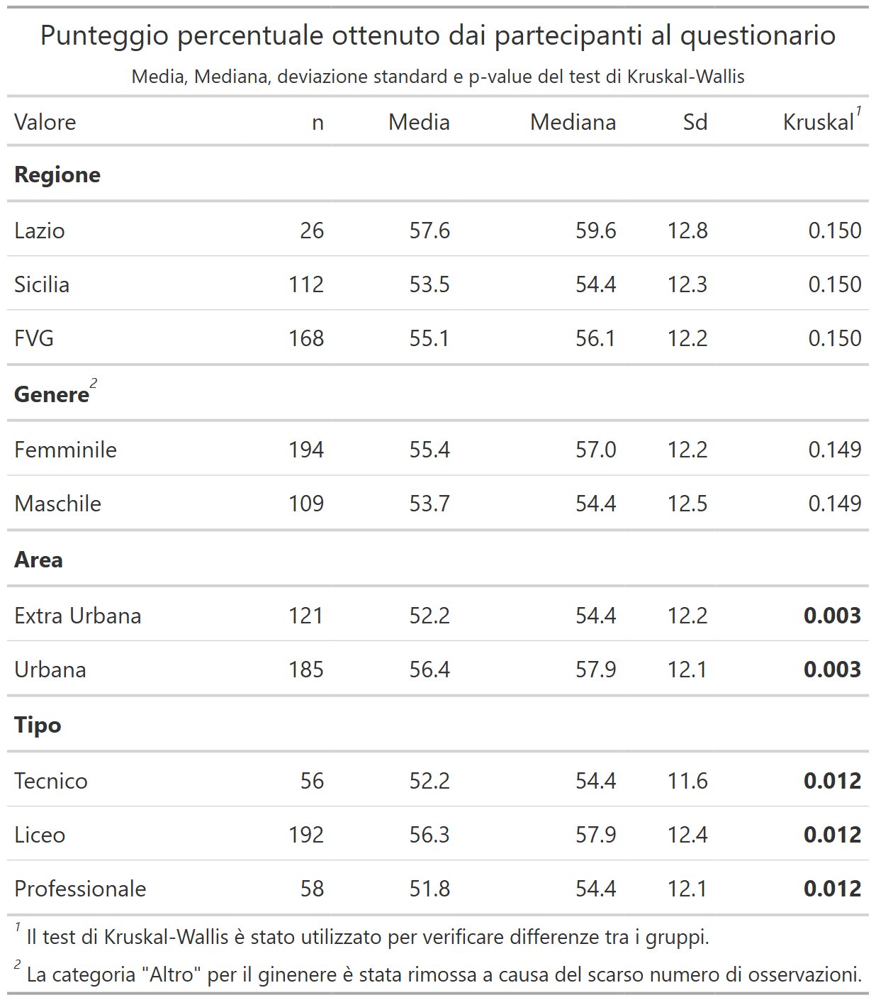

ESPRIT Study - Analysis of Pre-Intervention Survey Results
Understanding Adolescents’ Knowledge on STIs in Italy
Insights into the effectiveness of peer education on STI awareness among Italian adolescents.
European Journal of Public Health
About This Study
This study is part of the ESPRIT project, focusing on the awareness and attitudes of Italian adolescents towards sexually transmitted infections (STIs) and the effectiveness of peer education interventions.
I contributed significantly to the quantitative analysis, utilizing tools such as the Kruskal-Wallis test to uncover gender and educational differences in STI knowledge. We found notable disparities in understanding between different demographics, highlighting areas for future educational interventions. (Gazzetta et al. 2024)
For those interested in public health and adolescent education, here is the full article here.
My Contributions
Quantitative Analysis
In this study, I performed a robust quantitative analysis using R. Key packages included tidyverse for data manipulation, ggplot2 and ggstatsplot for data visualization, gt and gtsummary for summarizing statistical results. The analysis focused on sociodemographic data, considering variables such as school type, gender, and region. For statistical analysis, a combination of Kruskal-Wallis test for non-parametric data and linear regression models were applied to identify significant differences in STI knowledge across different groups. The data processing involved handling missing values, creating custom color palettes for visualization, and generating comprehensive tables to summarize findings.

Data Visualization
Custom visualizations were created to effectively communicate the results. These included bar plots and histograms to depict the distribution of survey responses, as well as tile plots to compare subgroup performances. A key focus was on making the visualizations intuitive and engaging, using custom color palettes to align with the project’s branding.